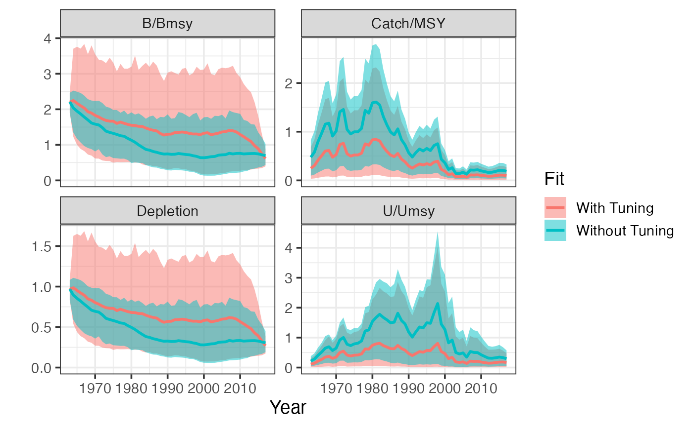

library(tidyverse)
#> ── Attaching packages ─────────────────────────────────────── tidyverse 1.3.1 ──
#> ✓ ggplot2 3.3.5 ✓ purrr 0.3.4
#> ✓ tibble 3.1.5 ✓ dplyr 1.0.7
#> ✓ tidyr 1.1.4 ✓ stringr 1.4.0
#> ✓ readr 2.0.2 ✓ forcats 0.5.1
#> ── Conflicts ────────────────────────────────────────── tidyverse_conflicts() ──
#> x dplyr::filter() masks stats::filter()
#> x dplyr::lag() masks stats::lag()
library(sraplus)
example_taxa <- "gadus morhua"
data(cod)I’ve added a tuning process to try and get the “post-model-pre-data” (or prior predictive) values of terminal depletion to match any “pre-model-pre-data” priors. I think it addresses some of Andre’s concerns, and from a practical perspective
Fixes the issue where really broad priors on terminal depletion from say the swept area ratio algorithm produced positively bias status estimates when run through sraplus (or indeed any standard stock reduciton algorithm, including catch-MSY)
Greatly improves stability of the model when actually fitting to data
I’d like to get your feedback on the tuning steps, to make sure we’re all OK with it
The sraplus package now includes a tuning routine to try and ensure that the “post-model-pre-data” prior matches the prior you put in. By “post-model-pre-data” here I mean basically filtering priors through a surplus production model with catches, but nothing you’re actually fitting to (no data).
The basic problem: consider a purely stock-reduction analysis case (with a Schaefer model for simplicity’s sake), where all you have are catches. In the absence of any prior on terminal depletion, any r/k combination that doesn’t crash the population works. So, any estimate of terminal depletion will be a function of your priors on r and k, and in particular as you allow k to be bigger, your post-data-pre-model “estimate” of terminal depletion will increase (0 = 0 * k, 1 = k).
Suppose you introduce a prior on terminal depletion? This creates two problem. First, by placing priors on r and k, given the catch, you are implicitly placing a prior on terminal depletion. So, by placing an explicit prior on terminal depletion, you’re placing a prior on a transformed parameter, and sort of “hiding” your implicit prior on terminal depletion which is a joint function of r, k, catch, and terminal depletion prior here.
Second, ideally, if we think we actually have a prior on terminal depletion, it shouldn’t change before and after seeing the catches (though see discussion on this later). But, in this example, if we pass all of those priors to a model, our “post-model-pre-data” prior on terminal depletion will be different (and always higher) than the prior we put in. This is because there are always more ways for a fishery to be less depleted than more depleted. So, this creates a behavior where it looks as though the model has “updated” it’s priors post SRA style process (e.g. Catch-MSY), even though it’s just a reflection of the sampling algorithm.
Simple example here using some cod data
driors <- format_driors(
taxa = example_taxa,
catch = cod$catch,
years = cod$year,
terminal_state = 0.25,
terminal_state_cv = 0.25,
growth_rate_prior_cv = 0.5
)
plot_driors(driors)Sample catches and priors
Focus on the panel for the prior and “posterior” (I know, I know, no data, but not about to change the legend depending on whether there are data to fit to or not) for terminal_state (Fig.@ref(fig:untuned-fit)). We’d like them to match, but our post-model-pre-data estimate of terminal_state is now higher than our “prior”.
untuned_fit <- fit_sraplus(driors = driors,
engine = "sir",
draws = 1e6,
estimate_proc_error = TRUE,
tune_prior_predictive = FALSE)
plot_prior_posterior(untuned_fit, driors)Prior-posterior plots for SIR algorithm without tuning process. Note that the ‘posterior’ on terminal depletion does not match the prior, despite having no data in the model to update our priors
Andre recommended solving this by estimating r and terminal depletion instead of r and k. However, this creates a bit of a computational bottleneck, and some issues of its own I’ll touch on later.
I’ve come up with a somewhat hacky approximation to this problem. By setting tune_prior_predictive = TRUE, the algorithm now does a version of the following
Run a normal SRA style algorithm (sample from priors on r and k, filter through catches)
Assign a prior probability to each SRA draw based on the prior on terminal depletion
Create high-resolution bins of terminal depletion, and calculate the mean prior probability in each bin
Assign each draw from the SRA algorithm to a terminal depletion bin (and associated mean prior probability)
Assign a sampling weight to each draw within a bin equal to \(\frac{BinPriorProbability}{NumberInBin}\)
Now run the SIR algorithm, sampling from the draws with replacement and weighting by the weights calculated in step 5.
The end result is that more or less the post-model-pre-data prior on terminal depletion should match the prior on terminal depletion supplied. Basically what this is doing is saying, given the production model and catches, what r and k priors produce your prior on terminal depletion. It’s not a perfect match, but it’s a lot closer than when you don’t apply the tuning step (Fig.@ref(fig:tuned-fit)).
When tune_prior_predictive = FALSE, step 5 is turned off, and each draw from the SRA algorithm is sampled in proportion to its prior probability. The problem here, is that suppose that your prior probability assigns a very small probability to a depletion of 0.99 (again meaning 0.99 * k, s basically unfished). However, if you have a wide enough prior on K, even through the prior probability of any one draw that produces a depletion of 0.99 will be small, there will be tons of them, since any k between the smallest k that produces a depletion of 0.99 up until k = Infinity will have the same prior probability. So, as a result you end up with a lot more high k values, and subsequently an upward shift in your post-model-pre-data prior on terminal depletion.
tuned_fit <- fit_sraplus(driors = driors,
engine = "sir",
draws = 1e6,
estimate_proc_error = TRUE,
tune_prior_predictive = TRUE)
plot_prior_posterior(tuned_fit, driors)Prior-posterior plots for SIR algorithm with tuning process. Note that the ‘posterior’ on terminal depletion now more or less matches the prior, as we should hope since we have no data to update said prior
The upshot to all this is that now, when running in SIR mode, and with a prior on say terminal depletion informed by swept area ratio, even if the prior is very diffuse, the terminal depletion post SIR model will more or less match the swept area ratio based prior.
plot_sraplus(`With Tuning` = tuned_fit, `Without Tuning` = untuned_fit)
When we actually have say an index to fit to, when tune_prior_predictive = TRUE, sraplus first uses the sir process above to re-tune any priors on r and k. From a practical perspective, if the index is informative, the only effect of this is to dramatically stabilize the model, since it spends a lot less time in r-k regions that crash the population.
The goal of all of this is twofold: first, to try and resolve Andre’s Borel’s Paradox concerns when placing priors on r, k and terminal depletion, and his issues with the catch not being data. The second and more practical upshot is to improve model stability by having it spend less time in parameter spaces that crash the population.
However, I’m having some trouble with Andre’s position that the catches are not data and our priors shouldn’t be updated by them. The crux of the issue is that catches, at least to my mind, do contain some information as they approach zero. Suppose that we are asked for our default prior for terminal depletion of a fishery, and we are a pessimistic person about the state of fisheries, so I say terminal_depletion ~ log_normal(log(0.2), .25).
Now, suppose you show me the catch history for a fishery (assuming complete time series and perfectly accurate), and it is zero every year. Shouldn’t I update my priors? Since if we assume a surplus production model, there’s no realistic way for consistently zero catches to produce our pessimistic prior on terminal depletion. This issue raises its head sometimes when catches were high in the past, but have been consistently extremely low for a long time: there’s not way for such a catch series to produce very low depletion values without extremely low r values, or a very long string of very bad process errors, which at some point should clash with our priors on r and process error. Not a problem to solve in this paper in my opinion, but putting it here for discussion.